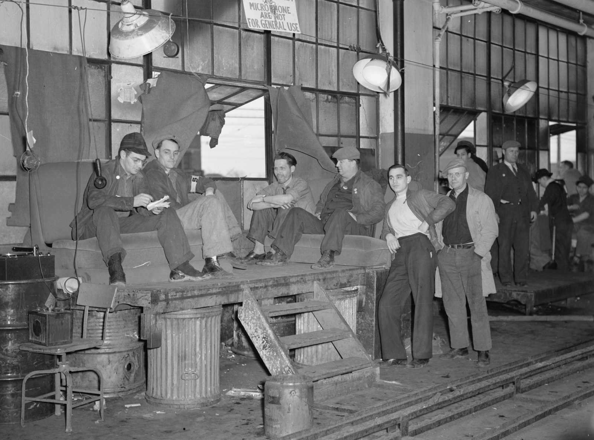

Directions: Read the full text, then answer the questions at the end.
The Wagner Act of 1935 had promised workers the right to organize and bargain collectively, and had created a board to enforce the promise. In November 1935, union leaders set on organizing the mass production industries formed the Committee for Industrial Organization inside the American Federation of Labor, soon the Congress of Industrial Organizations, the CIO. John L. Lewis, president of the United Mine Workers, chaired it. The older federation unions organized by craft, one union for each skilled trade. The CIO organized by industry instead. Every worker in an auto plant or steel mill, skilled or unskilled, would join one union and bargain together.
The CIO carried a new tactic into the plants. In an ordinary strike, workers walked out, and the company could try to run the plant with replacement workers. In a sit-down strike, the workers stopped work and stayed inside. They occupied the machines, slept beside them, and held the plant itself. Replacement workers could not enter without a fight to retake the building, which few employers or governors would order. Through the winter of 1936 and 1937 it spread to rubber shops, auto plants, and five and ten cent stores, wherever unorganized workers decided to use the right the Wagner Act had named.
The test came at General Motors. On December 30, 1936, workers sat down at the Fisher Body plants in Flint, Michigan, and the strike spread until it stopped production across the company. The men inside organized the occupation, with committees for food, sanitation, and defense, while a women's auxiliary outside brought meals and picketed. Police who tried to retake one plant on January 11 were driven off with fire hoses and car door hinges, in the Battle of the Running Bulls. Governor Frank Murphy sent the National Guard to Flint, but he used it to keep order, not to drive the men out. On February 11, 1937, after forty-four days, General Motors recognized the United Auto Workers as the bargaining representative of its members, and UAW membership multiplied within the year.

Workers who had stood outside the labor movement for a generation signed union cards, and union membership climbed from under three million in 1933 toward nine million by the end of the decade. Steel fought back hardest. At Republic Steel in Chicago, strikers and their families marched on Memorial Day, May 30, 1937, toward the plant to set up a picket line. Chicago police blocked the march and fired into the crowd. Ten people were killed, most of them shot from behind, and dozens more were wounded. A Senate committee found the police violence unjustified. Newsreel film of the shooting was kept out of public theaters for a time as too disturbing to show. In one season, labor had won a legal right, a famous victory, and ten funerals.
While workers won in the plants, the President lost ground in Washington. Roosevelt had been reelected in November 1936 carrying forty-six of the forty-eight states, but the Supreme Court had struck down New Deal laws in 1935 and 1936 and he expected more. On February 5, 1937, he sent Congress his plan: an additional judge for every federal judge over seventy who did not retire, up to six new justices on the Supreme Court. Opponents named it court packing at once, and much of the country, and many Senate Democrats, read it as an attack on the Court itself. While the bill stalled, the Court changed course. In March it upheld a state minimum wage law, in April the Wagner Act, and in May Social Security. In July the Senate sent the bill back to committee, where it died.
The year's second blow came from the economy. Believing recovery close, Roosevelt cut federal spending, and the relief rolls shrank. At the same time, the new Social Security payroll taxes had begun in January 1937, taking money out of workers' pay for benefits not payable monthly until 1940. Money was being pulled out of a weak economy from both directions at once. Industrial production fell by about a third between the summer of 1937 and the spring of 1938. Unemployment, about fourteen percent in 1937, climbed back toward nineteen percent in 1938. Critics named it the Roosevelt recession, and the name stung, because this downturn had begun inside the New Deal's own house.
In the spring of 1938 Roosevelt asked Congress for new spending, and Congress provided it, accepting in practice deficit spending, government spending beyond its revenue, used to put money into an economy in a slump. Production recovered, though unemployment stayed high. The year 1937 therefore left two ledgers. On one side, labor had won its largest victories in the country's history to that point, and the Court had sustained the Wagner Act and Social Security. On the other, the President had lost the court fight and presided over a recession his opponents could name after him. Which ledger ran longer is the question the final lesson of this unit takes up.
1. How did the CIO's way of organizing differ from the older federation unions, and why did the difference fit the mass production industries?
2. Explain how a sit-down strike worked, and why it was harder for a company to defeat than an ordinary strike.
3. Give the Flint strike in sequence: when it began, how the men held the plants, what the governor did with the National Guard, and how it ended.
4. The reading places the Memorial Day Massacre and the court packing fight in the same year as Flint. State what happened in each, and what each one shows about the limits of labor's victories and of the President's power.
5. What caused the Roosevelt recession, as the reading gives it, and what did the administration do in the spring of 1938 in response? Answer in a short paragraph.
1. How did the CIO's way of organizing differ from the older federation unions, and why did the difference fit the mass production industries? The older American Federation of Labor unions organized by craft, one union for each skilled trade, which left most factory workers, who had no single craft, outside. The CIO, formed in November 1935 under John L. Lewis and renamed the Congress of Industrial Organizations, organized by industry: every worker in a plant, skilled or unskilled, joined one union and bargained together. That fit mass production because an auto or steel plant ran as one system of many kinds of labor; a union of the whole plant could stop the whole plant, and it could speak for the workers the craft unions had never enrolled.
2. Explain how a sit-down strike worked, and why it was harder to defeat than an ordinary strike. The workers stopped work and remained inside the factory, occupying the machines and sleeping beside them, instead of walking out to picket. In an ordinary strike the company could bring in replacement workers and try to run the plant; against a sit-down, replacements could not enter without a fight to retake the building, and employers and governors were generally unwilling to order troops or police to storm a plant full of men and machinery. The tactic also kept strikers together, fed, and organized, rather than scattered on a picket line.
3. Give the Flint strike in sequence. It began on December 30, 1936, when workers sat down at the Fisher Body plants in Flint, Michigan, and spread until General Motors production stopped. The men inside organized committees for food, sanitation, and defense, and a women's auxiliary outside supplied meals and pickets. On January 11, 1937, strikers repelled police and company guards in the Battle of the Running Bulls. Governor Frank Murphy sent the National Guard to keep order but refused to use it to evict the strikers. On February 11, 1937, after forty-four days, General Motors recognized the United Auto Workers as the bargaining representative of its members.
4. State what happened in the Memorial Day Massacre and the court packing fight, and what each shows. On Memorial Day, May 30, 1937, Chicago police fired on a march of Republic Steel strikers and their families; ten people were killed, most shot from behind, and a Senate committee later found the police violence unjustified. It shows that the legal right to organize, won at Flint, was still enforced unevenly on the ground and could cost strikers their lives where employers and police resisted. In the court packing fight, Roosevelt proposed on February 5, 1937, to add a judge for every judge over seventy who did not retire, up to six new Supreme Court justices; the Senate killed the bill in July, even as the Court upheld the Wagner Act and Social Security. It shows the limit of even a landslide president's power when the country read his plan as an attack on the Court itself.
5. What caused the Roosevelt recession, and what did the administration do in the spring of 1938? Full credit answers name both withdrawals of money the reading identifies. The administration cut federal spending and shrank the relief rolls in the belief that recovery was close, while the new Social Security payroll taxes, begun in January 1937, took money out of workers' pay for benefits that would not be paid monthly until 1940. Spending fell as taxes rose, production dropped by about a third, and unemployment climbed back toward nineteen percent in 1938. In the spring of 1938 Roosevelt asked Congress for new spending and Congress provided it, accepting deficit spending in practice. Answers that blame business confidence or the Court fight alone have not followed the reading's account.